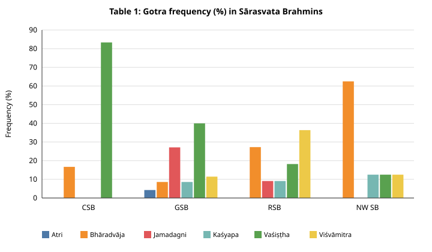
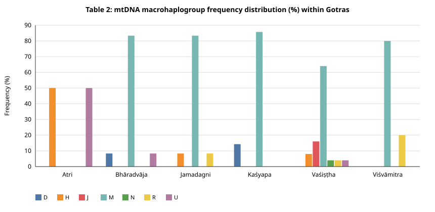
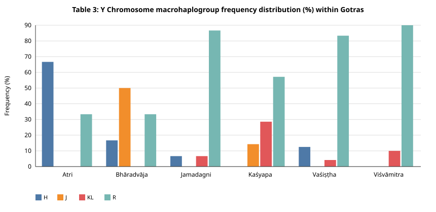
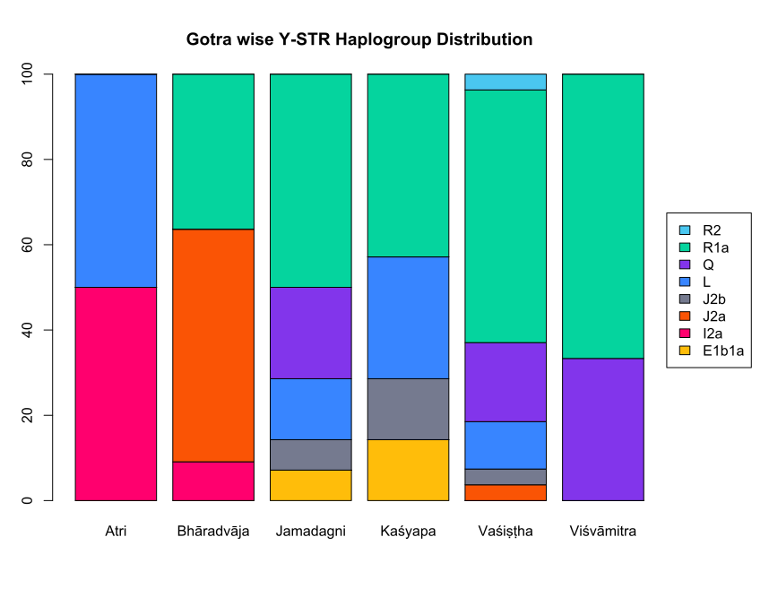
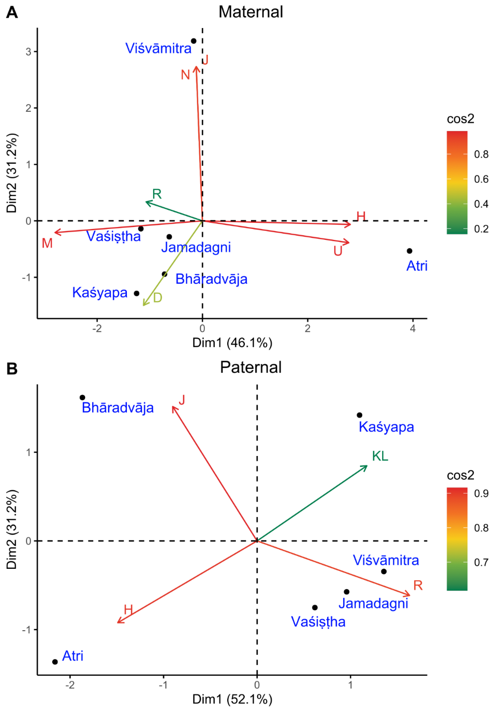
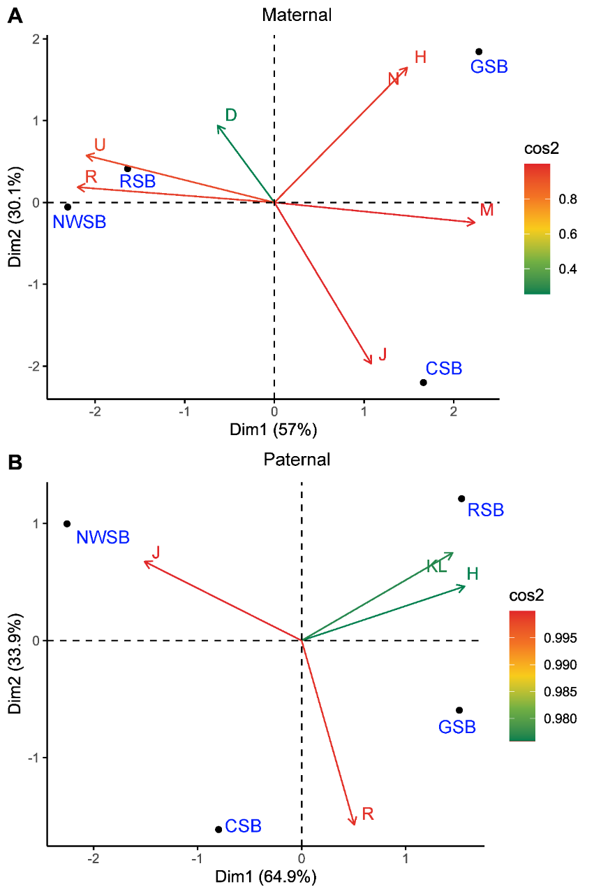
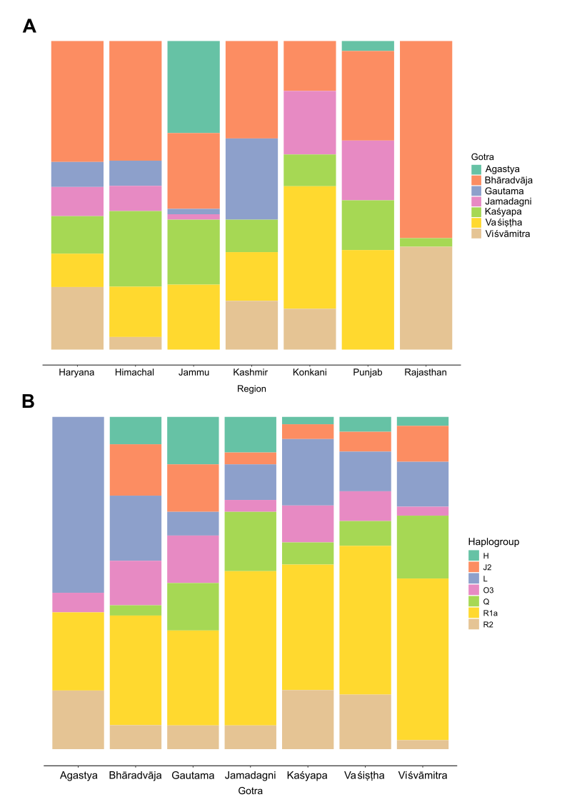
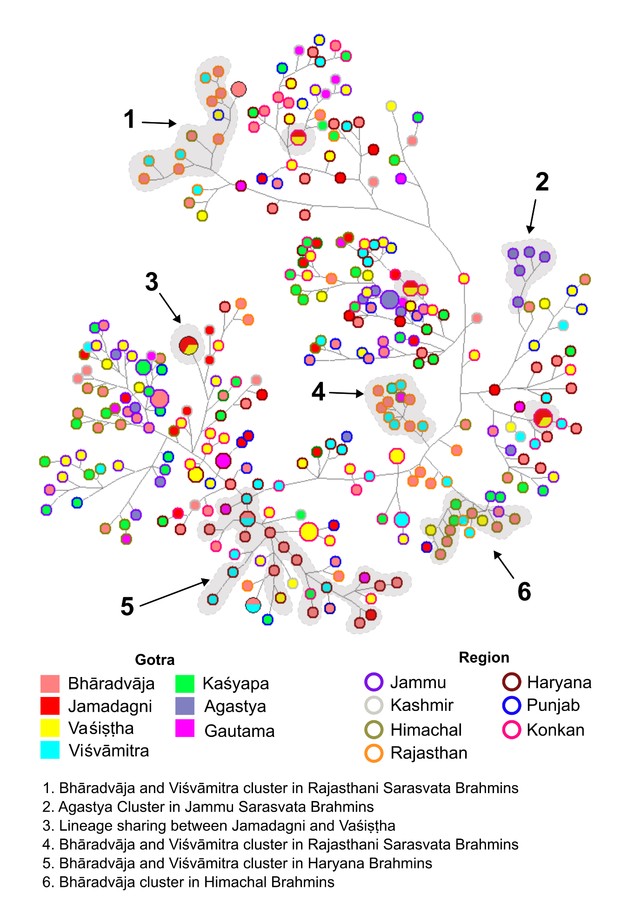
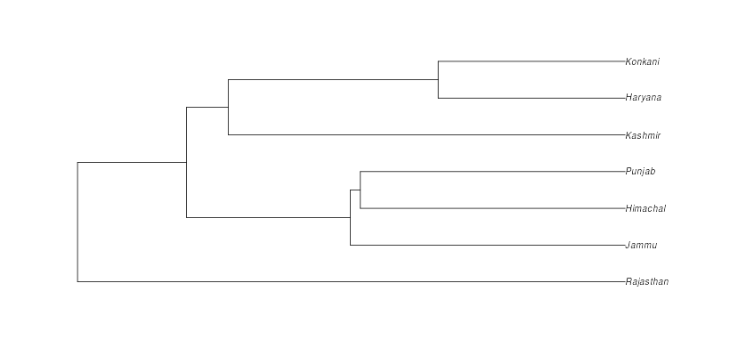

Supplementary File
Exploring the genetic footprints of the gotra system in the Koṅkaṇī Sārasvata Brahmins
Jaison Jeevan Sequeira1, Swathi Shastri1, Pankaj Shrivastava2, 3, Ritu Yadav4, Bhuvnesh Yadav5, Shivkant Sharma4,6, George van Driem7,8 and Mohammed S Mustak1
1 Department of Applied Zoology, Mangalore University, Mangalagangotri, 574199, India.
2 Department of Anthropology, Dr. Harisingh Gour Vishwavidyalaya (a central university), Sagar, 470003, Madhya Pradesh, India
3 DNA Unit, Regional Forensic Science Laboratory, Jabalpur, 482001, India
4 Department of Genetics, M. D. University, Rohtak, Haryana 124001, India
5 Department of Forensic Science, Amity School of Applied Sciences, Amity University, Haryana, India
6 Ingenomics Private Limited, New Delhi, India
7 Institut für Sprachwissenschaft, Universität Bern, Länggassstrasse 49, 3012 Bern, Switzerland
8 Indian Institute of Technology, Guwahati, 781039, India
Correspondence to:
Dr. Mohammed S Mustak
Department of Applied Zoology, Mangalore University, Mangalagangotri, 574199, India
Email: msmustak@gmail.com
Table 1: Gotra frequency (%) in Sārasvata Brahmins
| Gotra | CSB | GSB | RSB | NW SB |
|---|---|---|---|---|
| Atri | 0 | 4.29 | 0 | 0 |
| Bhāradvāja | 16.67 | 8.57 | 27.27 | 62.5 |
| Jamadagni | 0 | 27.14 | 9.09 | 0 |
| Kaśyapa | 0 | 8.57 | 9.09 | 12.5 |
| Vaśiṣṭha | 83.33 | 40 | 18.18 | 12.5 |
| Viśvāmitra | 0 | 11.43 | 36.36 | 12.5 |

Table 2: mtDNA macrohaplogroup frequency distribution (%) within Gotras
| Haplogroup | Atri | Bhāradvāja | Jamadagni | Kaśyapa | Vaśiṣṭha | Viśvāmitra |
|---|---|---|---|---|---|---|
| D | 0 | 8.33 | 0 | 14.29 | 0 | 0 |
| H | 50 | 0 | 8.33 | 0 | 8 | 0 |
| J | 0 | 0 | 0 | 0 | 16 | 0 |
| M | 0 | 83.33 | 83.33 | 85.71 | 64 | 80 |
| N | 0 | 0 | 0 | 0 | 4 | 0 |
| R | 0 | 0 | 8.33 | 0 | 4 | 20 |
| U | 50 | 8.33 | 0 | 0 | 4 | 0 |

Table 3: Y Chromosome macrohaplogroup frequency distribution (%) within Gotras
| Haplogroup | Atri | Bhāradvāja | Jamadagni | Kaśyapa | Vaśiṣṭha | Viśvāmitra |
|---|---|---|---|---|---|---|
| H | 66.67 | 16.67 | 6.67 | 0 | 12.5 | 0 |
| J | 0 | 50 | 0 | 14.29 | 0 | 0 |
| KL | 0 | 0 | 6.67 | 28.57 | 4.17 | 10 |
| R | 33.33 | 33.33 | 86.67 | 57.14 | 83.33 | 90 |

Table 4: Hapest Y Haplogroup Predictor results
| ID | Hg1 | Fitness Score | Probabilty (%) | Hg2 | Fitness Score | Probabilty (%) |
|---|---|---|---|---|---|---|
| KN07 | I2a | 18 | 68.8 | L | 17 | 25.8 |
| KN078 | L | 20 | 59.7 | I2a | 20 | 27.5 |
| KN011 | I2a | 14 | 74.9 | L | 13 | 24.5 |
| KN069 | R1a | 40 | 100 | |||
| SAR23 | J2a | 18 | 99.8 | |||
| SAR24 | J2a | 20 | 100 | |||
| SAR70 | J2a | 25 | 100 | |||
| SAR73 | J2a | 23 | 75.7 | J2b | 18 | 24.3 |
| SAR78 | R1a | 39 | 100 | |||
| SAR80 | R1a | 36 | 100 | |||
| SAR84 | J2a | 25 | 100 | |||
| SAR108 | J2a | 23 | 100 | |||
| SAR109 | R1a | 40 | 100 | |||
| KN02 | E1b1a | 21 | 83.4 | L | 19 | 13.3 |
| KN013 | J2b | 12 | 95.8 | J2a | 13 | 4.1 |
| KN017 | R1a | 47 | 100 | |||
| KN025 | R1a | 47 | 100 | |||
| KN031 | R1a | 47 | 100 | |||
| KN058 | R1a | 51 | 100 | |||
| KN080 | R1a | 45 | 100 | |||
| SAR46 | L | 36 | 100 | |||
| SAR50 | R1a | 50 | 100 | |||
| SAR53 | Q | 24 | 50 | O | 24 | 50 |
| SAR90 | L | 28 | 100 | |||
| SAR104 | R1a | 42 | 100 | |||
| SAR105 | Q | 24 | 50 | O | 24 | 50 |
| SAR114 | Q | 25 | 50 | O | 25 | 50 |
| KN05 | L | 27 | 100 | |||
| KN06 | J2b | 18 | 100 | |||
| KN012 | L | 20 | 100 | |||
| KN064 | E1b1a | 21 | 99 | |||
| KN090 | R1a | 44 | 100 | |||
| SAR52 | R1a | 35 | 100 | |||
| SAR107 | R1a | 32 | 100 | |||
| KN01 | R1a | 53 | 100 | |||
| KN04 | R1a | 33 | 100 | |||
| KN09 | R1a | 31 | 100 | |||
| KN010 | L | 23 | 99.9 | |||
| KN018 | R1a | 38 | 100 | |||
| KN019 | R1a | 43 | 100 | |||
| KN033 | R1a | 32 | 100 | |||
| KN035 | J2a | 18 | 51 | J2b | 14 | 48.5 |
| KN050 | R1a | 44 | 100 | |||
| KN057 | R1a | 42 | 100 | |||
| KN060 | R1a | 46 | 100 | |||
| KN066 | R1a | 45 | 100 | |||
| KN067 | R1a | 44 | 100 | |||
| KN071 | R1a | 40 | 100 | |||
| KN076 | J2b | 19 | 97.9 | J2a | 21 | 2.1 |
| SAR17 | Q | 15 | 49.6 | O | 15 | 49.6 |
| SAR42 | Q | 30 | 50 | O | 30 | 50 |
| SAR58 | R1a | 51 | 100 | |||
| SAR59 | R2 | 41 | 100 | |||
| SAR66 | R1a | 41 | 100 | |||
| SAR76 | Q | 19 | 49.6 | O | 19 | 49.6 |
| SAR86 | Q | 26 | 50 | O | 26 | 50 |
| SAR88 | L | 31 | 100 | |||
| SAR89 | R1a | 36 | 100 | |||
| SAR98 | Q | 28 | 50 | O | 28 | 50 |
| SAR99 | L | 31 | 100 | |||
| SAR103 | R1a | 29 | 100 | |||
| KN036 | R1a | 30 | 100 | |||
| SAR16 | R1a | 43 | 100 | |||
| SAR26 | R1a | 26 | 100 | |||
| SAR30 | Q | 25 | 50 | O | 25 | 50 |
| SAR72 | Q | 24 | 45.4 | O | 24 | 45.4 |
| SAR85 | R1a | 46 | 100 | |||
| SAR95 | R1a | 40 | 100 | |||
| SAR97 | Q | 27 | 50 | O | 27 | 50 |
| SAR101 | R1a | 43 | 100 | |||
| SAR110 | R1a | 50 | 100 |
Fig. 1: Y STR haplogroup frequency distribution (%) within Gotras

Table 6: Y-SNP markers used for haplogroup determination
| SNPID | Hg | rsID | Forward Primer | Reverse Primer |
|---|---|---|---|---|
| M216 | C | rs2032666 | ctcaaccagtttttatgaagctag | gagagtctgaactaatgtgtcttgt |
| M174 | D | rs2032602 | acatctcagatcgttgtttggt | aaaaagccatgcaattacctg |
| M96 | E | rs9306841 | gttgccctctcacagagcac | aaggtcactggaaggattgc |
| M89 | F | rs2032652 | agaagcagattgatgtcccact | tccagttaggagatcccctca |
| M201 | G | rs2032636 | tatgcatttgttgagtatatgtc | gttctgaatgaaagttcaaacg |
| M69 | H | rs2032673 | ggttatcatagcccactatactttg | atctttattccctttgtcttgct |
| M370 | H1a | rs386419969 | ccttcatttaggctgtagctgc | tgtatctttagttgagatgg |
| M282 | H2 | rs13447371 | acactttcctgcagcgaatta | tgctctcaggggaaaatctg |
| M304 | J | rs13447352 | caaagtgctgggattacagg | cttctagcttcatctgcattgt |
| M267 | J1 | rs9341313 | ttatcctgagccgttgtccctg | tgtagagacacggttgtaccct |
| M172 | J2 | rs2032604 | ttgaagttacttttataatctaatgctt | ataatttattactttacagtcacagtgg |
| M410 | J2a | rs371079691 | caatcattgaccttaagtctgagtccc | actggatacctttctaggaagaattg |
| M9 | K | rs3900 | gcagcatataaaactttcagg | gcttgagcaaagttaggtttt |
| M20 | L | rs3911 | gattgggtgtcttcagtgct | cacacaacaaggcaccat |
| M76 | L1a | rs377001539 | tagaagtagcagattgggagagg | cctgataaaatgaaaaaaatggtc |
| M357 | L1a2 | rs377156966 | ccccgttttttcctctctgcc | cacgtaacctgggatggtcata |
| M317 | L1b | rs201962034 | ctttcctactgtgataacgtc | ccttaataaccgaggcacaa |
| M175 | O | rs2032678 | ttgagcaagaaaaatagtaccca | ctccattcttaactatctcaggga |
| P295 | P | rs895530 | attcacaataacatctggttgc | cctctctgagtcctgcctac |
| M207 | R | rs2032658 | aggaaaaatcagaagtatccctg | caaaattcaccaagaatccttg |
| M173 | R1 | rs2032624 | aagaaatgttgaactgaaagttgat | aggtgtatctggcatccgtta |
| M124 | R2 | rs372706460 | tggtaaactctacttagttgccttt | cagcgaattagattttcttgc |
Maternal Ancestral Variation
Mitochondrial DNA variation was calculated, and haplogroup frequency data were used for the analysis (Supplementary Table 2). Individuals of the Atri gotra belong to the West Eurasian specific H2 (50%) and U7 (50%) haplogroups. Most of the Bhāradvāja, Jamadagni, Kaśyapa, Vaśiṣṭha and Viśvāmitra gotra individuals belong to the M haplogroup, with frequencies ranging between 64% and 85.7%. The Bhāradvāja were shown to have traces of U2 (8.3%) and D4 (8.3%). Haplogroup D4 (14.3%) is also found amongst the Kaśyapa. The Jamadagni were found to harbour traces of R30 (8.3%) and H1 (8.3%). The Vaśiṣṭha turned out to be the most diverse gotra, with both Indian specific (M, N5 and R6) and West Eurasian haplogroups (HV6, J1, and U6) being found in this gotra. Besides haplogroup M, traces of haplogroup R32 (20%) were also found in Viśvāmitra individuals. In order to understand clustering patterns in the gotra system, PCA was performed (Fig. 1 A). The Bhāradvāja, Kaśyapa, Jamadagni and Vaśiṣṭha gotras cluster together, and this cluster is dominated by Indian specific haplogroups. The Viśvāmitra and Atri gotras cluster separately, possibly due to the absence of the M haplogroup in the latter. Haplogroups M, N, J, H and U were responsible for this clustering pattern.
Fig. 2: Biplot showing the clustering pattern amongst the gotras, based on maternal haplogroups
Arrows represent the contribution (cos2) of each haplogroup towards the variation.

Koṅkaṇī Sārasvata Brahmin subgroup variation
To visualise the clustering pattern in Koṅkaṇī Sārasvata Brahmin subgroups based on the haplogroup variance, we performed multivariate analysis. Interestingly, the Rājāpur Sārasvata and non-Koṅkaṇī Sārasvata Brahmins clustered together due to haplogroup R and U. The Citrapur Sārasvata Brahmins clustered separately due to the prevalence of haplogroup J. Haplogroup N and H contributed highly to the variation observed in the Gauḍa Sārasvata Brahmins. Paternally, we observe four different clusters. Haplogroups H and K/L contributed to the Rājāpur Sārasvata Brahmins cluster, whilst haplogroup J was found at higher frequencies amongst the non-Koṅkaṇī Sārasvata Brahmins. The Gauḍa and Citrapur Sārasvata Brahmins showed a higher prevalence of haplogroup R. However, the variation between these two groups is due to the presence of Indian-specific H haplogroup in the Gauḍa Sārasvata Brahmins.
Fig. 3: The PCA biplots show the clustering pattern in the subgroups based on paternal and maternal haplogroup distribution
Arrows represent the contribution (cos2) of each haplogroup towards the variation.

The paired sample t-test that compared the PC1 and PC2 coordinates of gotras and subgroups, with the outcome p=0.99975 and p=0.99866 for paternal and maternal PC loadings respectively, indicates that there is no significant difference between the clustering pattern, irrespective of whether the classification is gotra-based or subgroup-based.
Interpopulation analysis
Fig. 4: Stacked bar plot showing distribution of gotras across different Brahmin subgroups (A). Stacked bar plot showing distribution of paternal haplogroups across gotras (B).

Fig. 5: Median joining network for YSTR profiles from Indian Brahmin groups.

Fig. 6: Neighbour joining tree based on YSTR haplotypes of brahmins from different regions of India.
